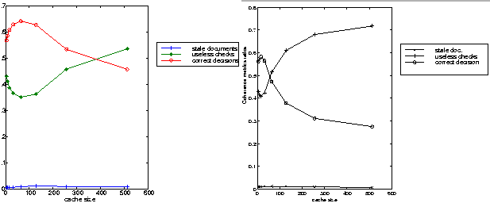

Information Research, Vol. 6 No. 1, October 2000


Information Research, Vol. 6 No. 1, October 2000 | ||||
|
|
|||
Document coherency is a challenging problem for Web caching. Once the documents are cached throughout the Internet, it is often difficult to keep them coherent with the origin document without generating a new traffic that could increase the traffic on the international backbone and overload the popular servers. Several solutions have been proposed to solve this problem, among them two categories have been widely discussed: the strong document coherency and the weak document coherency. The cost and the efficiency of the two categories are still a controversial issue, while in some studies the strong coherency is far too expensive to be used in the Web context, in other studies it could be maintained at a low cost. The accuracy of these analysis is depending very much on how the document updating process is approximated.
In this study, we compare some of the coherence methods proposed for Web caching. Among other points, we study the side effects of these methods on the Internet traffic. The ultimate goal is to study the cache behavior under several conditions, which will cover some of the factors that play an important role in the Web cache performance evaluation and quantify their impact on the simulation accuracy. The results presented in this study show indeed some differences in the outcome of the simulation of a Web cache depending on the workload being used, and the probability distribution used to approximate updates on the cached documents. Each experiment shows two case studies that outline the impact of the considered parameter on the performance of the cache.
Nowadays, Web caches are used all over the world to reduce the traffic and the delays on the Internet. It is now common to find home pages that show to users how to select a cache server or to subscribe as a member of a cache hierarchy. In the context of the World Wide Web, caches act as intermediate systems that intercept the end-users requests before they arrive to the remote server. A Web cache checks if the requested information is available in it local storage, if yes a reply is sent back to the user with the requested data; otherwise the cache forwards the request on behalf of the user to either another cache or to the origin remote server. When the cache receives back the data, it keeps a copy in its local storage and forwards back the results to the user. The copies kept in the cache are used for subsequent users' requests, this scheme dramatically reduces the redundant traffic on the Internet. However, caching has not only brought solutions to the Internet community; it has also introduced new problems and new challenges. In essence, caching poses a serious problem related to the cache coherency; by introducing Web caches, multiple copies of the requested data are created and stored all over the Internet. Keeping all these copies coherent with the original one is very challenging in a distributed environment such as the Internet. Among the factors that make this problem harder than traditional caching, the heterogeneity of the WWW plays an important role. The fact that different implementations of the cache server software are being used on different servers and the lack of standardization has worsen the problem. Often, cache servers cannot cooperate, which reduces their performances.
To solve the problem of cache coherency in such a hostile environment two main classes of methods emerged. The final goals of the two classes are slightly different. While the first class, known as the strong document coherency, focuses on the fact that every document forwarded to the users must be coherent with the original copy, the second class, the so called weak document coherency, maximizes the probability of forwarding an up-to-date document to the users. In the latter case, sending stale documents to the end-users is a possible event. The real challenge is to keep the probability of this event as small as possible. The two classes are not completely incompatible, on the contrary, they could be complementary methods. Maintaining a strong coherence is not worth for certain applications, however, it could be crucial for others. The relative importance of the degree of coherency according to the type of application is becoming a real issue in the proposed solutions, especially, those using Object-Oriented mechanisms (Wessels, 1995; Kermarrec, et al., 1998).
The problem of maintaining document coherency in Web cache servers was studied first for separate none cooperative caches. In this scheme, each cache server has to take care of the documents stored in its local storage. The proposed solutions imply checking transactions between each Web cache server and the origin servers (Gwertzman & Seltzer, 1996). More sophisticated solutions split the task of maintaining the document coherency among several Web cache servers forming a a federation of Web caches (Wessels, 1995; Kermarrec, et al., 1998; Makpangou & Berenguier (1997); Clinton & Das, 1997; Caughey, et al., 1997). Basically, this strategy consists of a set of Web servers cooperating to maintain the document coherency and to reduce the network traffic and delay. The proposed solutions can be separated in two sub-categories: approaches that tackle the problem at the protocol level and those focusing on building up an efficient cooperative federation of Web cache servers. In the next sub-paragraphs a short description of some recent implementations of document coherency in the context of "cooperative Web caching" is given.
The Relais Protocol: proposed by INRIA is based on a distributed index; each member of the federation has an up-to-date copy of this index. The index is used to locate a copy of a document within the federation. To maintain document coherency, the Relais Protocol relies on the state of the cache that stores the document. If this cache was recently in a faulty or disconnected state then its content cannot be used by the other caches until the faulty cache goes through a reconciliation phase (Makpangou & Berenguier (1997)).
The Flexible Open Caching: uses an object oriented paradigm. It defines specific servers and objects called W3Oserver and W3Object respectively. The transaction in this context are per-object oriented and thus an application-specific consistency protocol is expected to lead to better performance (Caughey, et al., 1997).
Self-Organizing Cooperative WWW caching: is a symmetric distributed cache system. It consists of equal functionality cache servers. A protocol for handling the activity management is defined, which allows to maintain a list of active cache servers in a distributed manner. Each cache within the federation is responsible of the validity of the documents cached in its local storage; it propagates the information among the other cache servers. Periodic origin servers polling allows to reduce the round-trip latency of the validation at the time of user's access (Inohara, et al., 1998 ).
The problem we want to investigate in this paper is the efficiency of these methods. If we study carefully all the coherence strategies described above, we can identify two main categories of mechanisms: server-initiated mechanisms and client-initiated mechanisms. The first category includes mechanisms such as the invalidation protocol where the origin server explicitly sends messages to notify any changes in the state of the document. The second category includes mechanisms where the client (cache server) periodically checks the state of the cached document before forwarding it to the end-user.
The rest of the paper is organized as follows: in Section 2, we present the architecture of the Web cache model used to perform the simulation and discuss some topics related to its accuracy, namely: the time scale, the workload duration and the approximation of the document updating process. In Section 3, we discuss the strong document coherency through the analysis of the simulation result of the invalidation protocol. Section 4 describes the weak document coherency. In Section 5, we present the impact of document prefetching on both the weak and strong document coherency. Finally, Section 6 concludes this paper.
We have built a simulation platform that mimics the main functions of a Web cache. For performance reasons, the simulation platform does not manipulate the whole cached documents; only the headers of these documents are kept in the cache. In the current implementation the headers of the cached documents contain: the document identifier, the document size, the time the document enters the cache, the time spent to retrieve the document form the origin server, and the life time of the document. These headers are stored in priority data structure according to several sorting strategies. Sorting the cached documents allows to identify which document to remove when the cache is full (details of the simulation platform are presented in Belloum & Hertzberger, 1998 ). In the next subsections we present briefly the simulation settings, and discuss the choices made for the parameters that affect the accuracy of the simulation.
Figure 1 shows the main components of Web cache model we are using in the experiments discussed in this paper. The implemented model simulates both the behavior of the Web cache and the document updating process.The latter approximates the distribution of modification of the cached documents. One part of this model, called Web cache server, implements the main functions of a cache server, mainly the replacement and the document coherency strategies. The other part, called trace-generator generates the requests forwarded to the cache, and receives the checks from the cache. It keeps track of all the requests it has generated in the past.
The workloads used in this study are part of access log-files provided by the Web server of the Computer Science Department of the University of Amsterdam WINS (wins.uva.nl), and the proxy server NLANR (ircache.nlanr.net). The WINS workload contains external requests to documents provided by the wins.uva.nl server. This workload exhibits a strong document locality of references. The NLANR workload involves requests coming from different Web servers using the NLANR servers as proxy servers.
Besides communicating with the cache, the trace-generator is in charge of the document updating process. It includes a periodic process that marks documents as being out-of-date to simulate updates performed on the requested documents. Depending on the coherence strategy being tested, two types of actions are taken:
The trace-generator plays the role of the origin server for each document included in the access log-file. A list of requested documents containing only one instance of each document is maintained. One item from this list is periodically selected and marked as being modified. The trace-generator introduces two important factors that impact indeed the results of the simulations: the distribution used to update the documents and the frequency at which they are updated.
The time scale used in the simulations is different from the real one, this is mainly due to the high speed at which requests are generated. While in real situations requests are generated at a speed of few requests per second, in the simulation the requests are generated at a speed of thousands of requests per second. This feature allow the simulation of a long period of Web server activity within a short time. This means that all the parameters that have a correlation with the real time, should be modified in order to take into consideration the new time scale. Parameters such as the TTL_value (Time-to-Live values) describing the documents' life time should thus be multiplied by a factor to re-scale their values according to the simulation time scale. Simulation time, expressed in UT (unit of time), and the real time expressed in seconds are related through the following expression:
| (1) |
Where Workload_Duration is the amount of time, in seconds, covered by the workload and the Number_request is the number of requests contained in the workload. The TTL values expressed in seconds can be translated in terms of UT by using the following expression:
| (2) |
The simulation of the document coherency requires metrics that allow to record the performance of the system, and metrics that record the side effects of the document coherence strategies on the Internet traffic. As it is outlined in the introduction, in order to maintain document coherency all the proposed approaches generate a new traffic to keep the cached documents up-to-date. It is thus of great importance to measure the impact of this new traffic on the current Internet traffic. For this purpose, we have selected a set of metrics that could probe all the phenomena discussed in this study:
For the counters that record the number of "Get-if-modified" messages and invalidation messages the number of "useful" messages is recorded apart from the "useless" ones. A useful message achieves the goal it is issued for either by invalidating the cached documents or returning its new state; while a "useless" message can not accomplish its task because the document was removed from the cache before or its state have not change since it was cached.
When we have to investigate techniques that involve parameters related to the time and the age of the documents, the choice of the workload size becomes of an extreme importance. The longer the workload duration, the more accurate the simulation results are. Unfortunately, long workloads duration leads to long simulation times. Let's consider the minimal workload duration. It should be at least equal to the maximal TTL_value, otherwise documents that have these TTL_values will never be out of date during the simulations. Having the minimal duration of the simulation, we can express the simulation time as n times this minimal duration. For n large, we can assume that the simulations will be accurate enough to estimate the document coherency with the current values of the TTL_value. If we divided both the TTL_value and workload duration by the same factor we should keep approximately the same accuracy as the one we get using the initial values. If this assumption is valid for all none null values of n, it is also valid for n that leads to the original minimal workload duration. Therefore we can hope that we make a tradeoff between the simulation time and its accuracy.
The simulation results we have obtained did not show noticeable difference in the performance of the system with or without the rescaling process. However, the simulation time is divided by a factor of 10. Instead of a few days of continuous simulation using a long duration workload a faster simulation (few simulation hours) using shorter workloads provides almost the same accuracy.
The Modification of the documents at the origin servers is approximated using probability distributions. Some Web traffic analyses suggested that documents could remain unmodified for a long period of time and start being modified frequently within a short period of time (Gwertzman, 1995). Others showed that popular documents have small size and do not change frequently (Bestavros, 1995). Therefore it seems that the age and the size of the documents could be used in the process of defining document updating distribution. In the following experiments we have used two distributions: the uniform distribution and another one using a heuristic based on the documents size.
Heuristic for the document updating process: if large size documents are not frequently modified, and if small documents are likely to be static regarding to the statistics, then we can assume that the document updating process could be approximated by a normal distribution on the documents size. Thus, only the document belonging to the interval defined by the standard deviation are more likely to be modified.
In the experiments discussed in this study, there is a strong correlation between the updating process characteristics and the used workload. The updating process is using a list extracted form the workload on which it is performing the updates. This makes the updating process very sensitive to the workload nature. If the workload has a strong locality of references, the extracted list is rather small (7% of the workload requests for certain workloads). If the workload has a weak locality of reference the selection list represents a large percentage of the workload requests 78%. In the latter case, the number of possible events for the selection process and the number of times the updating process, are performed is in the same order of magnitude.
So far, we have focussed only on the distribution used in the selecting process, however, it is not the only factor that could impact the simulation results. The frequency at which documents are updated is also a very important factor. Usually to simulate the document updates a periodic process is generated, which simply modifies the "last-modification-time" of each document. To point out the impact of the updating frequency on the simulation results, we have set up a simple experiment, in which documents are selected from a list according to a predefined distribution but at different frequencies.
In the following experiments polling, the document list at the same frequency of the incoming requests suggests that a document is modified every 4s, while when polling at a frequency equal to 1/100 of the incoming requests leads to one document update every 100s. In the rest of the paper these document updating frequencies will be referenced as low and high polling frequencies. The probability of selecting a document when using the first polling frequency is equal to 3.3% while this probability decreases to 0.15% with the second one. According to Web traffic analysis performed by Bestavros (Bestavros, 1995), the average document update probability is contained between 2.5% and 0.5 %.
To achieve a weak document coherency the most commonly used method assigns a live time to each document, known as the TTL_value (Time-To-live value). The TTL_values are an a priori estimate of the life time of the documents. TTL-based strategies are simple to implement in HTTP using the "expires" header fields. The challenge in supporting TTL-based strategies lies in selecting the appropriate TTL_values themselves. If small TTL_values are chosen, a large number of useless checks might be generated; if large TTL_values are used, out of date documents may be returned to the end-users.
The weak document coherency does not guaranty the coherent state of the documents. Usually, a percentage is given as a maximal bound of the number on the stale documents forwarded to the users. The study provided by Gwortzmane and Margo shows that this percentage could be less than 5 %, when using the TTL or the Alex protocol (Gwertzman & Seltzer, 1996). The weak document coherency makes a tradeoff between the amount of bandwidth gained and the number of stale documents forwarded to the users. Once again, the study of Gwortzmane and Margo shows that if well tuned the weak document coherency could lead to a high reduction of the traffic while a very low rate of stale documents are forwarded from the cache server. The great challenge in maintaining high performance document coherency is to find the optimal frequency at which the state of the cached documents have to be checked with the origin server.
In the following experiments two probability distributions for the updating process have been tried (the uniform and normal distributions). The first results did not show any impact of the probability distribution on the global behavior of the cache, only minor changes have been recorded. The experiments show in general that the ratio of the stale documents forwarded to the end-users remains constantly low except for severe conditions, such as high polling frequencies or very long life document where the ratio of stale documents can reach 25%. This phenomenon is recorded only for small cache size (less than 64MB). Meanwhile, the weak document coherency has generated a network overload which varies between 35 % and 70 % depending on: the updating distribution, its polling frequency and the workload nature. This cost depends thus on the factors approximated in the simulation, especially on factors related to the document updating process.
|  |
The TTL values currently used in practice are defined on a per document type basis, i.e. each type of document has its own TTL value (Wooster & Abrams, 1997). Using these values, we have started a set of experiments to study the impact of the TTL value on the accuracy of the cache server.
Workload with a strong locality of reference: a few changes have been recorded in these experiments when different updating process frequencies are applied. As it is outlined in Figure 2-right, at low updating polling frequency the cache maintains a very low and constant ratio of stale documents forwarded to the end-users. The cost paid for this feature in terms of network overload is characterized by the useless checks, for which the ratio lies between 40 % and 70 % depending on the cache size. If we assume that the documents are more frequently updated, we notice that the number of stale documents increases to reach 22% for small cache size (Figure 3-right). This means that the number of stale documents does not increase with the cache size. The reason for that is the fact that around 10% of the checks performed by the server, and which were recorded in the previous experiment as useless checks (low updating frequency), are in this experiment performed on real out-of-date documents.
Workload with weak locality of reference: With the NLANR workload the document updating frequency doesn't seem to play an important role when it is combined with a uniform distribution. The evolution curves recorded for the coherence metrics look the same for both of the two updating polling frequencies (Figures 2-left and 3-left). This behavior results from the fact that even at the high polling frequency the number of possible events and number of times the updating process is performed are in the same order of magnitude. The normal distribution, which updated frequently only documents belonging to the predefined variance, shows identical evolutions of the cache performance.
The strong document coherence guarantees that if a document is forwarded from the cache storage, it is updated. Check every time and invalidation protocol are two examples of strong coherence strategies. The Check every time approach is initiated by the cache, which checks at each new request if the document is still up to date by sending a request to the original server with the header "get-if-modified". This strategy reduces the number of bytes/transferred throughout the Internet but it overloads the very popular servers with these checking messages. In the invalidation strategy the initiative of starting a document updating sequence is taken by the origin server. At each time a document is modified, a message is sent to invalidate all the copies. To perform such a task, the origin server has to keep track of all the Web server addresses where its documents are cached.
With both strategies a large number of useless messages will be exchanged between the origin server and each Web cache. For the check-every-time strategy useless messages are those sent by the cache server to check about a document while it is still up to date. This situation is likely to happen since the estimated document life time is equal to one day while the frequency of the arrival of the requests is counted in seconds. For the invalidation strategy useless messages are invalidation messages sent by the origin server to a Web cache, while the document has been already removed form the cache. This situation is also possible since documents are evicted form the cache frequently (refer to (Belloum, Hertzberger 1997/1998) for more details on the document removal strategies).
The simulations results shown in Figure 4 and 5 give insights on the events occurring at the Web cache when applying the invalidation protocol. As expected, an increase of the ratio of "correct decisions" and a decrease of the ratio of "useless check" occurs. This phenomenon could not be outlined at low document updating polling frequency because the percentage of successful invalidation is rather small (less than 1% of the hit ratio, the same ratio of correct decision in Figures 2, 4-left and 5-left). However, it is clearly pointed out at high frequency where the successful invalidation ratio is around 11 % of the cache hit activity (Figure 4-right and 5-right).
The efficiency of the invalidation protocol is measured using the "useless invalidations" and the number of "document invalidated" and requested later on. The evolution of these two metrics emphasis the fact that invalidation works better for large cache size. The results recorded depend a lot on the document updating process, the invalidation is cost effective for large size caches when a uniform distribution and low polling frequency are used (Figure 4-left), but it appears less efficient for all cache sizes at high polling frequency (Figure 4 right). When changing the distribution to a normal one, the ratio of "useless checks" is reduced to 10% for 512MB caches, the invalidated documents seem to be very popular (Figure 5).
In these four experiments we have used the WINS workload which exhibits a strong locality of reference, which implies that a large number documents are frequently requested. It is quite understandable that if the document updating process is approximated by a uniform distribution and if the life time of the documents is assumed short (because of the high polling frequency), the invalidation strategy doesn't perform well. However, if the popular documents are more dynamic (feature approximated by the normal distribution) then the invalidation shows good characteristics for large cache size. Invalidation improves the correct decision performed by the cache server; which has reduced the useless traffic due to cache checks and maintaining a low rate of useless invalidations.
The same experiments have been conducted using the NLANR workload, comparing the results recorded with the same workload and the weak coherency. The invalidation does not improve that much the performance of the cache server if a uniform distribution is used for the updating process Both the useless checks and the correct decisions are slightly improved for large size caches, less than 5% of improvement is recorded (Figure 3 and 6). A large percentage of the invalidations messages failed to achieve their task leading to 90 % of useless invalidations. More than that, the successful invalidations are performed on documents which are never requested by the users, the ratio of invalid documents requested is less than 1% (Figure 6).
Similar behavior is shown when using the normal distributions: the invalidation process failed to match with the content of the cache. Under the conditions described in this experiment the invalidation protocol appears to be very inefficient.
The experiments we have performed show that the cost we have to pay in terms of new network traffic is highly depending on the document updating process. If we assume that the invalidation messages issued by the origin server and the checking messages issued by the caches have the same length then we can expect on the average that there will be a reduction in the network traffic. In general, the traffic generated by the invalidations represents a small percentage of the cache checks (between 1% and 11%). In this experiment, we have considered only one cache server, in real situations each cache server generates an equivalent useless traffic which reduces more the efficiency of the invalidation strategy.
Pre-fetching is initiated by the cache server. The documents are pre-fetched or more precisely "re-fetched" before they are requested. Usually, documents are pre-fetched because they are out of date or they will become out of date in a nearest future. Pre-fetching is a technique that reduces the number of stale documents forwarded to the end-users when weak document coherency approaches are used. It also reduces the delay resulting from reloading the new version of the document when it is requested.
Pre-fetching introduces both new traffic and additional processing to the cache server. A trade-off has to be made between the gain resulting form pre-fetching and its side effects on the network traffic and the cache server overload. The ideal implementation of pre-fetching should optimize two factors: the frequency at which the documents are pre-fetched and which documents are pre-fetched. In order not to overload the cache server, pre-fetching could be performed when the cache server is not busy with the users' requests, for instance, during night hours where both the network and the cache are not submitted to heavy loads. To measure the performance of the cache when pre-fetching techniques are applied, the following metric has been defined: the number of documents successfully pre-fetched i.e., these are the documents pre-fetched by the cache and requested later on by the cache users. In the following experiment, we are studying the pre-fetching techniques with the invalidation protocol and the TTL-based strategy.
The first experiment assumes that the document updating process follows a uniform distribution. Comparing to the behavior recorded in the previous experiments (Figure 4), pre-fetching has improved the Web cache performances: the number of correct decisions made by the server has been increased and useless checks have decreased. Large size cache configurations (256MB) seem to perform as many good decisions as small size ones. This is due to the increase of the number of successfully pre-fetched documents as we can see in Figure 7. If we take into consideration the load generated by the pre-fetching technique, the real increase in the cache performance is only 5% instead of the 20% shown on the figures. If a higher updating polling frequency is used, the cache takes advantage of the combination of invalidation and pre-fetching techniques, the ratio of correct decisions is higher than 85% for all cache sizes. The difference in performance between different cache sizes becomes less significant when documents updates are more frequent. This behavior results form the fact that more documents in the cache are being invalidated which increases the number of documents pre-fetched. The same evolutions are recorded when the document updating process follows a normal distribution. This holds true for both the two updating polling frequencies.
With the NLANR workload, comparing to the experiments performed under the same conditions and without using the pre-fetching technique, an improvement has been recorded. The evolution curve of the useless checks has been shifted down reducing the values by around 20%. However, there are some changes comparing to the experiments performed with pre-fetching on the WINS workload. For instance the percentage of successful pre-fetching is very low, around 10 % with a uniform document updating process (Figure 7-left) against a minimum value of 25% for the WINS workload. Besides, with a strong locality of reference load pre-fetching seems to give advantage to large size caches, the performance curves go up again after 256 MB (Figure 7-left) while they constantly decrease in the experience with the NLANR (Figure 8).
The experiments presented in this study dealt with the mechanisms used for maintaining Web cache coherence. They show the behavior of the cache in several situations where workloads with different characteristics have been used. These workloads are examples of the traffic crossing local and proxy Web cache servers. The aim of this paper is to show some of the phenomena related to factors that are known to have a direct or indirect impact on the Web cache coherence. We have compared two main approaches currently used: the strong and the weak document coherency.
The weak document coherency makes a tradeoff between two parameters. On one hand, it reduces the number of useless checks sent form the cache servers to the origin servers, which will reduce both the Internet traffic and the overload of the popular origin servers. On the other hand, it reduces the number of out-of-date documents forwarded to the end-users, which is the inevitable cost we have to pay in the weak document coherency. According to the performed experiments, this number is around 10 % of the total document forwarded by the cache server, the worst case we have recorded is 26%. Fortunately, this case is obtained only when assuming a normal distribution for the updating process, a weak locality of reference on the load, and a small cache size (64 MB). The number of useless checks lays between 40% and 70 % of the total number of the checking messages sent by the cache server. The evolution of the ratio of useless checks depends very much on the probability distribution for the updating process, its polling frequency, and the nature of the workload. The accuracy of the weak document coherency relies on the choice we make on the TTL_value,which is completely dependent on the Web traffic dynamics. It is obvious that a sudden change of the document average life time will result in a dramatic change of the weak coherency results. It is thus recommended to have an online process that continuously controls the Web cache performance to update the TTL_values assigned to the different categories of Web documents.
If the accuracy provided by the weak document coherency in not enough, and we want to eliminate the 10 % or the 26% of the stale documents, there is an alternative: the strong document coherency. In this study we have investigated a typical method that allows such a behavior: the invalidation protocol. As we have seen in the experiments the cost we have to pay for that is sometimes quite high, a maximum of 70 % of the invalidation messages are completely useless, they arrive at a cache server after the target document has been removed from the cache.
Both weak and strong document coherency could be improved by applying pre-fetching techniques. Once again we have to make a tradeoff between the frequency of pre-fetching and the gain we are aiming for. If a good choice is made on both the selection of the pre-fetched documents and the frequency at which they are pre-fetched, 10 % of the useless invalidation and 30 % of the useless checks can be removed. However, pre-fetching itself introduces a new category of useless traffic: the useless pre-fetched documents. But since the initiative of pre-fetching is on the cache server side, the latter can use its knowledge on the density of the traffic to perform its pre-fetching process.
We thank Cesar Garita Rodriguez for his many comments and suggestions on this paper, and Henk Muller of the university of Bristol, for his constructive critics throughout the project. This work was support by the HPCN Foundation through the project JERA grant 96150. We thank also National Science Foundation (grants NCR-9616602 and NCR-9521745), and the National Laboratory for Applied Network Research for providing access to data used in the experiments.
How to cite this paper:
Belloum, Adam and Hertberger, L.O. (2000) "Maintaining Web cache coherency". Information Research, 6(1) Available at: http://InformationR.net/ir/6-1/paper91.html
© the authors, 2000. Updated: 6th September 2000
Contents |
|
Home |